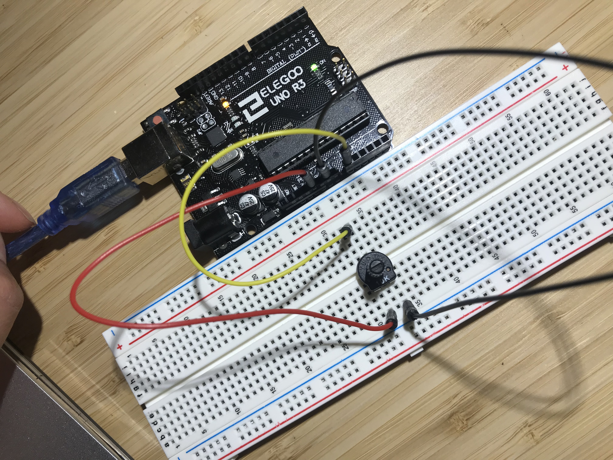
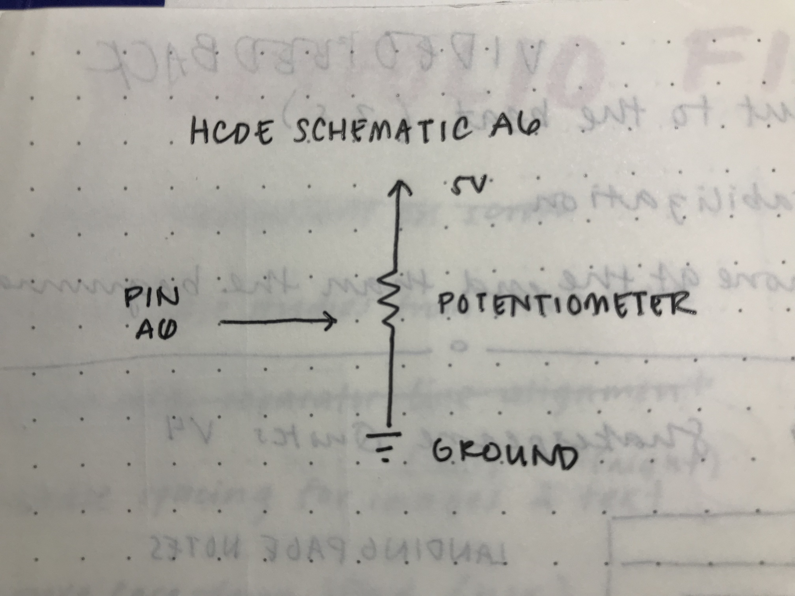

Reine Abubakar's Assignment 6
Arduino Code Snippet
// Reine Abubakar
// HCDE 439
// A6: Datalogging
// This program allows a potentiometer to control the
// drawing of ellipses on a webpage using p5.js
// Initializes once the board is reset
void setup() {
Serial.begin(9600); // Initializes serial communications at 9600 bps
}
// Runs over and over
void loop() {
int pot = analogRead(A0); // Reads the potentiometer value connected to pin A0
Serial.println(pot); // Prints the potentiometer value to serial monitor
delay(50); // Delays the potentiometer reading by 50 ms
}
Javascript Code Snippet
I'm not quite sure why the comments are spaced oddly.
// Reine Abubakar
// HCDE 439
// A6: Datalogging
// This p5.js file allows us to draw various-sized ellipses on a webpage depending
// on the potentiometer values read
var serial; // variable to hold an instance of the serialport library
var portName = '/dev/cu.usbmodem14101' // the name of my port
var datain; // some data coming in over serial
// Reads the serial values read from the port named above (in this case, our arduino)
function setup() {
serial = new p5.SerialPort(); // make a new instance of the serialport library
serial.on('list', printList); // set a callback function for the serialport list event
serial.on('connected', serverConnected); // callback for connecting to the server
serial.on('open', portOpen); // callback for the port opening
serial.on('data', serialEvent); // callback for when new data arrives
serial.on('error', serialError); // callback for errors
serial.on('close', portClose); // callback for the port closing
serial.list(); // list the serial ports
serial.open(portName); // open a serial port
createCanvas(1200, 800); // creates the canvas for our webpage drawing
background(0x08, 0x16, 0x40); // sets the background of the drawing
}
// get the list of ports:
function printList(portList) {
// portList is an array of serial port names
for (var i = 0; i < portList.length; i++) {
// Display the list the console:
print(i + " " + portList[i]);
}
}
// Prints out whether the program is connected to the server
function serverConnected() {
print('connected to server.');
}
// Prints out whether the serial port was opened
function portOpen() {
print('the serial port opened.')
}
// Prints out whether there was an error with the serial port
function serialError(err) {
print('Something went wrong with the serial port. ' + err);
}
// Prints out whether the serial port is closed
function portClose() {
print('The serial port closed.');
}
// Prints out the readings from the port
function serialEvent() {
if (serial.available()) {
datain = Number(serial.readLine());
console.log(datain);
}
}
// Maps the values of the serial readings to draw circles onto the webpage
function graphData(newData) {
var yPos = map(newData, 0, 255, 0, height); // maps the potentiometer readings to a y Value
var xPos = map(newData, 0, 255, 0, width); // maps the potentiometer readings to an x Value
stroke('#ffb4a2'); // sets the ellipse stroke to a peach color
ellipse(width / 2, height / 2, xPos, yPos); // draws an ellipse with a size based on the potentiometer reading
// If the height of the ellipse is greater than the window, the background resets
if (yPos > height) {
background(0x08, 0x16, 0x40); // draws the background again to reset the page
}
}
// Calls the graphData() function to draw the ellipses based on potentiometer readings
function draw() {
graphData(datain); // Calls the graphData() function and passes the information from serial readings
}
Circuit
The circuit is simple: it is composed of a simple potentiometer, connected to pin A0, power (5V) and ground.
Schematic
This is a schematic for the single potentiometer that was attached to the arduino. It is powered with only 5V from the USB as the arduino is attached to the computer. The potentiometer is connected to A0 so that the Arduino would be able to receive input values which would translate into a graphic on the webpage.
Circuit Operation

As the user twists the potentiometer, the program translates them into a circle size. The circle's width and height are mapped according to the input value from the potentiometer. As the user twists the potentiometer to the left, it displays a higher value, which maps out to create larger ellipses on the screen. More ellipses are created as the user twists the potentiometer in either direction.
However, if the ellipse created exceeds the height of the page, the background is reset to the original color to begin anew. My web page is slightly zoomed in (for visibility purposes) in this gif, so this feature in the code may not be obvious.